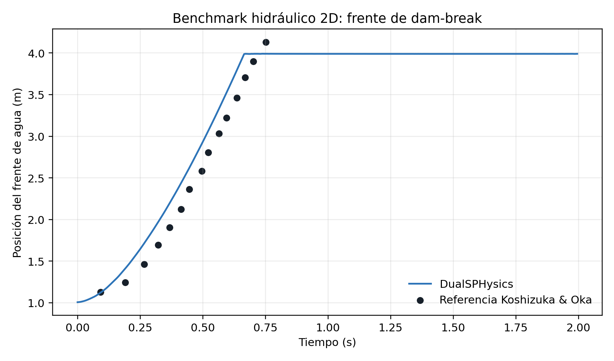
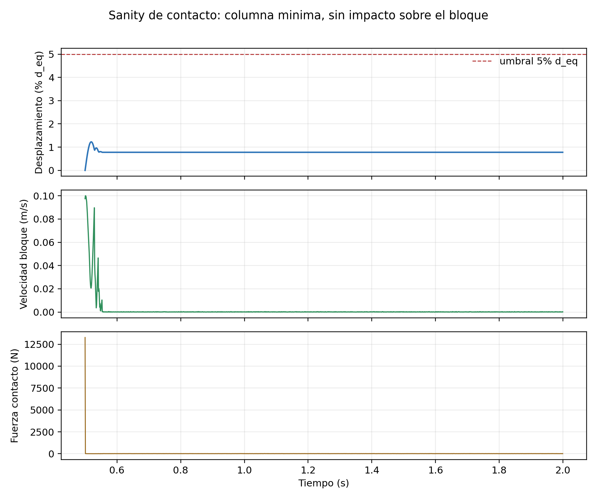
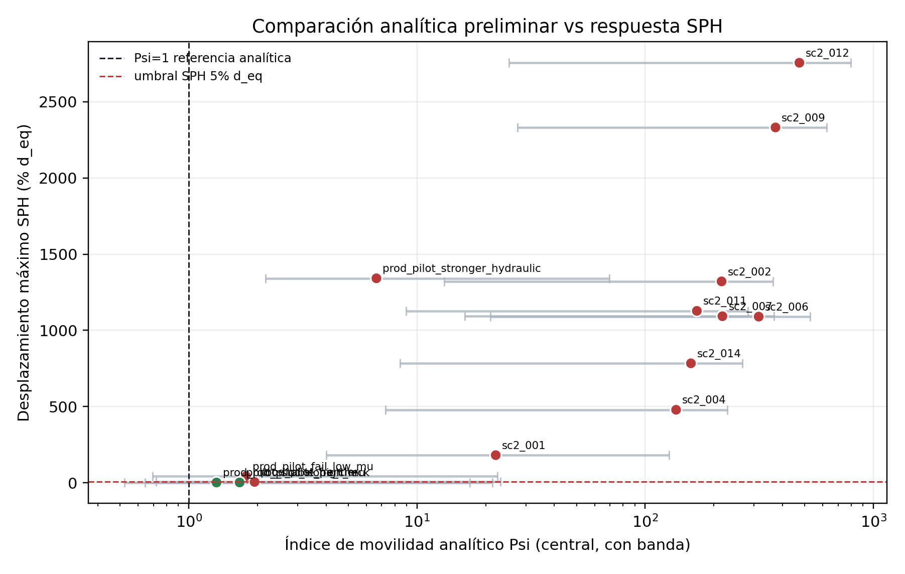

Convergencia de resolución SPH
Justificacion numérica de la resolución usada para producir la frontera de movimiento.
Conclusión de resolución
La resolución dp=0.003 se usa como base productiva porque conserva la respuesta de interés con un costo computacional viable. El refinamiento dp=0.002 queda reservado para cuantificar incertidumbre cerca del umbral, no para reemplazar toda la campaña principal.
- Base productiva
- dp=0.003 frontera y GP
- Referencia fina
- dp=0.002 incertidumbre
- Criterio de movimiento
- 5% d_eq desplazamiento máximo
- Fuente del movimiento
- Chrono bloque rigido
Evidencia de convergencia




